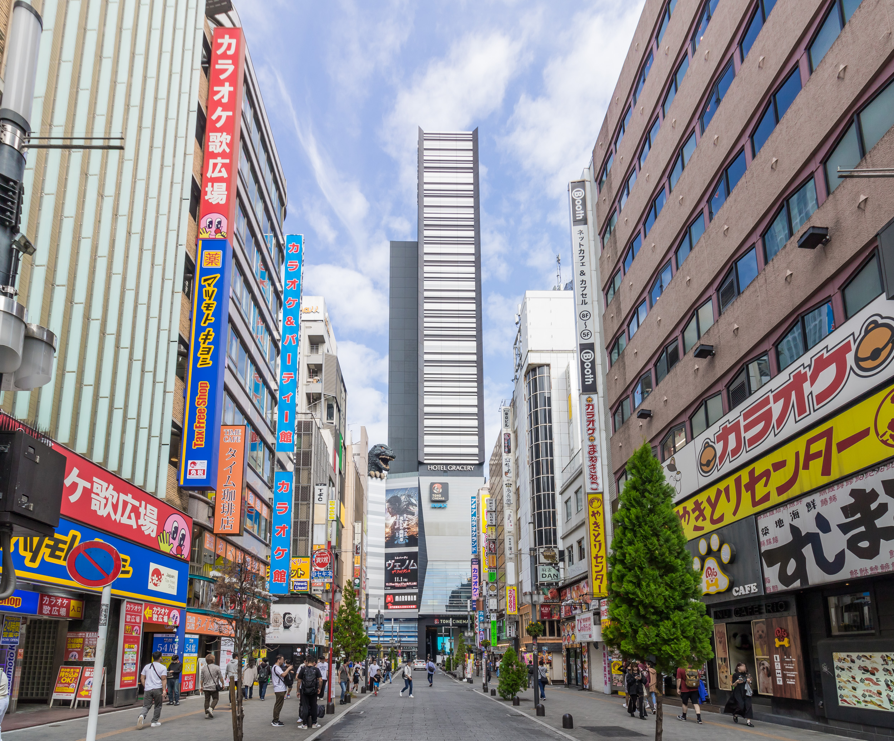
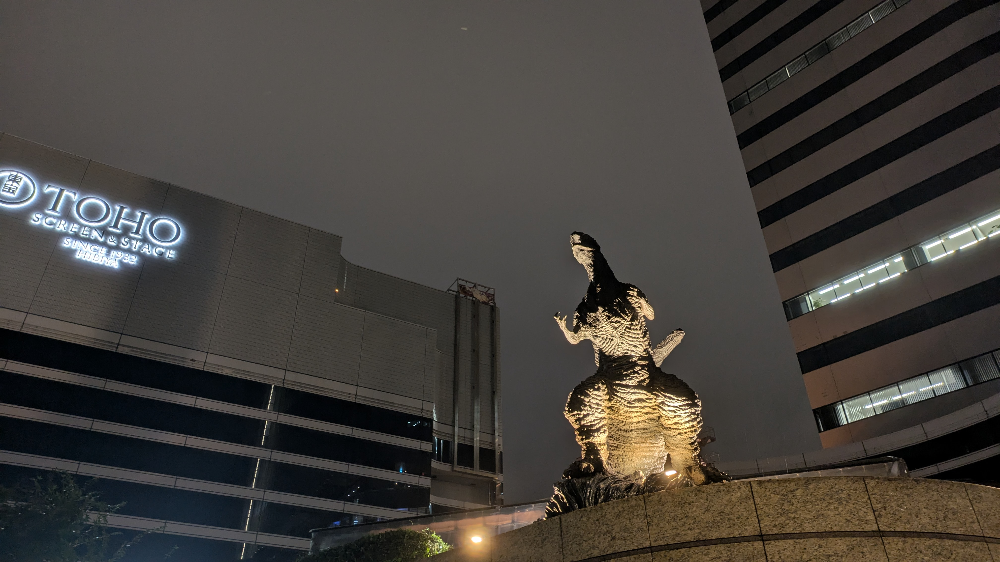
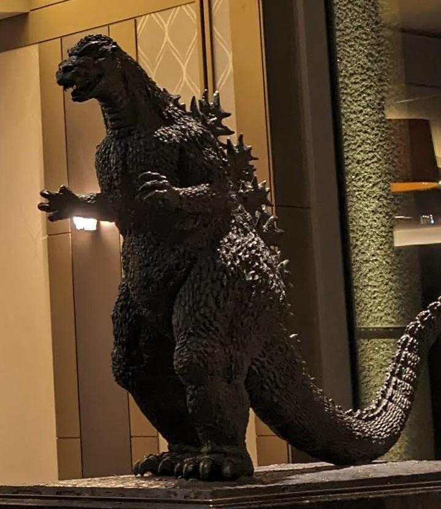
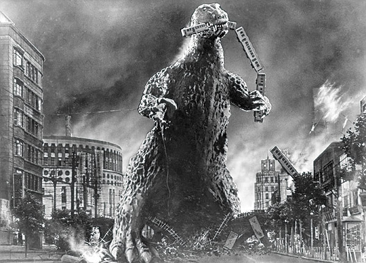
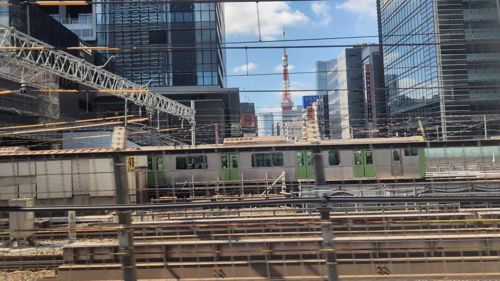
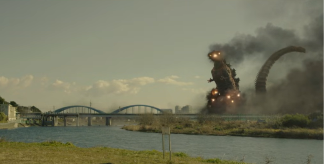
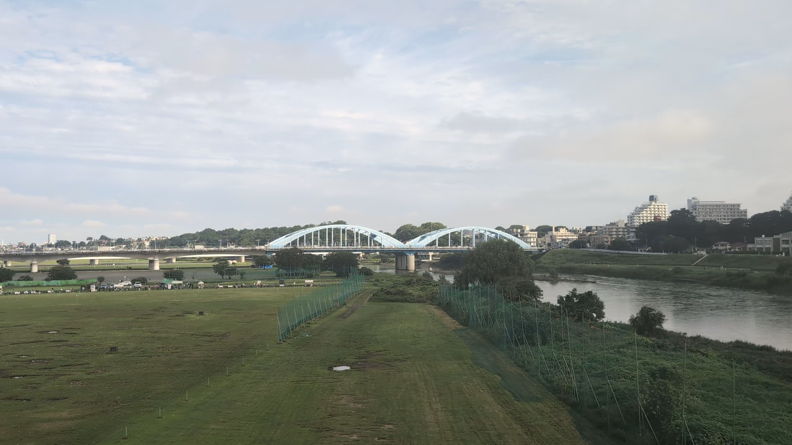
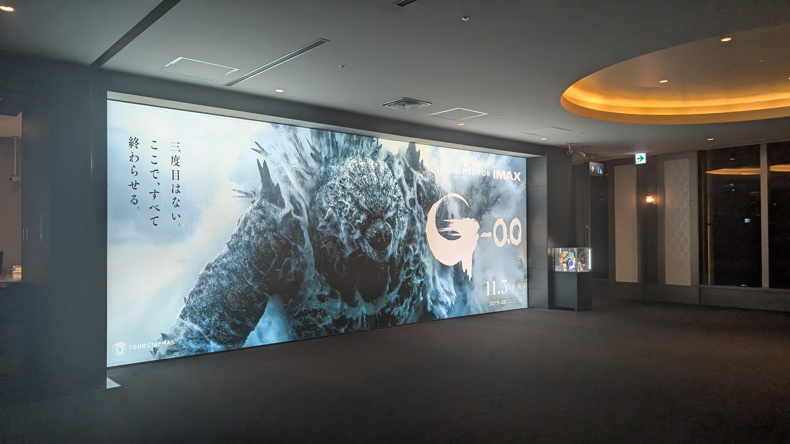

新宿・歌舞伎町。通りの先で、ビルの上からゴジラが顔をのぞかせています。東京には、こうして会いに行ける像と、映画の舞台になった場所があります。新宿・日比谷の街歩きから、東海道新幹線の車窓へ。ゴジラゆかりの東京をたどります。
『シン・ゴジラ』で戦いの舞台になる多摩川も、旅の途中にあります。新幹線の窓から見える青い丸子橋は、劇中で壊されるあの橋。街でゴジラに会い、列車から映画の舞台を眺める、二つの楽しみ方を紹介します。



01
通りの先を、少し見上げる
目指すのは、新宿東宝ビルのゴジラヘッド（Godzilla Head）。TOHOシネマズ新宿とホテルグレイスリー新宿が入る建物の、8階テラスに設置されています。頭部の高さは約12m。通りやビルと一緒に見上げると、街の中にゴジラが現れたように感じられます。
はじめて行くなら
東京駅からはJR中央線快速で新宿駅へ。
- 最寄り
- JR新宿駅・東口から徒歩約5分
- 目印
- 新宿東宝ビル／ゴジラロード
- 見方
- 地上の通りから、ビルの上を見上げる
- 演出
- 公式案内では12〜20時の毎正時
演出や施設の運用は変更されることがあります。訪問前に公式案内をご確認ください。
ホテルの宿泊予約や映画のチケットがなくても、地上の通りから見上げられます。テラスへ上がる見学とは分けて、街からゴジラに会う楽しみ方です。
写真には、街も一緒に。
顔だけを狙う前に、通りとビルが入る構図をひとつ。東京の繁華街にゴジラが現れた感じが残ります。立ち止まるときは人の流れを避け、車道に出ず、通行を妨げない場所から。
02
映画の街で、もう一体に会う


2025年9月撮影／michikusa
新宿でビルの上を見上げたら、日比谷では像の足元へ。日比谷ゴジラスクエア（Hibiya Godzilla Square）では、ゴジラの姿を間近で眺められます。最寄りはJR有楽町駅と地下鉄日比谷駅です。
映画館や劇場が集まる日比谷。夜には照明が像の凹凸を浮かび上がらせます。通りごと一枚に収めたい新宿とは違い、ここでは顔や背びれにも目を向けてみてください。
東京駅から新幹線に乗る前後なら、有楽町側へ足を延ばす街歩きに。有楽町での食事や、銀座への寄り道とも組み合わせやすい場所です。
日比谷の地図を見る ↗映画館の中にも、もう一体


日比谷駅で、あのテーマを
日比谷で地下鉄に乗るときは、駅でも耳を澄ませてみてください。2026年11月3日から、東京メトロ日比谷線・千代田線の日比谷駅では、発車メロディに「ゴジラのテーマ」が使われています。地上で像に会い、ホームでは音楽に出会う。ゴジラ巡りが、列車に乗る時間にも続きます。
03
新幹線で、映画の東京を眺める
東京を舞台にしてきたゴジラ映画。初代『ゴジラ』（1954）の実況には、いまも鉄道沿いに続く街の名が登場します。
「銀座尾張町から新橋、田町、芝、芝浦方面」
『ゴジラ』（1954）より／TOKYO GODZILLAs公式ガイド
『ゴジラ-1.0』（2023）でも襲われる銀座は、日比谷の街歩きと合わせて訪ねたい場所です。新幹線に乗ったら、今度は東京タワーと多摩川を探してみましょう。
ゴジラと、街を走る列車
列車をくわえるゴジラ。街を走る乗り物が、その巨体を際立たせています。『ゴジラ』が公開された1954年、東海道新幹線はまだありませんでした。ゴジラと鉄道の関わりは、新幹線が走る前から続いています。

出典：福岡市美術館「ゴジラ展―大怪獣、創造の軌跡」
ビルの間に、東京タワーを探す
東京駅を出て品川へ向かう間、E席側のビルの合間に赤と白の東京タワーが現れます。『ゴジラ×モスラ×メカゴジラ 東京SOS』（2003）では熱線を受け、『ゴジラ FINAL WARS』（2004）でも破壊される、映画の東京を象徴する塔の一つです。


見つけられるのは短い時間。列車が進むと、塔はまた建物の後ろへ隠れます。
初代の上陸地点を、品川から歩く
初代『ゴジラ』（1954）で、ゴジラが東京の陸上に姿を現したのが、品川の八ツ山橋東詰付近です。列車を襲う場面へと続くこの場所は、ゴジラと鉄道のつながりをたどる寄り道にもなります。
当時は、新幹線も東京タワーもまだない時代。橋も今とは異なり、現在の萌黄色の橋は1985年に架け替えられた4代目です。映画そのままの景色ではありませんが、線路をまたぐ橋の上で、ゴジラが現れた頃の東京に思いを巡らせられます。
新幹線は品川の先で八ツ山トンネルに入るため、ここは車窓から橋を探すのではなく、乗車前後に歩いて訪ねたい場所です。JR品川駅から徒歩約9分、京急線北品川駅から約4分。旧東海道の街歩きにもつなげられます。
04
多摩川で、映画の続きを
『シン・ゴジラ』（2016）では、東京へ進むゴジラを自衛隊が多摩川で迎え撃ちます。丸子橋もこの戦いに登場し、橋桁が飛ばされて戦車部隊を襲います。川を挟んで対峙するゴジラと防衛部隊。ふだんの河川敷が、東京への侵入を食い止める最前線になります。
青いアーチの丸子橋と、対岸に立つゴジラ。映画の場面と、新幹線の窓から見える現在の姿を見比べてみましょう。撮影する向きは異なりますが、川に連なる青いアーチが目印です。
映画の丸子橋

新幹線から見た現在


新幹線がこの多摩川を渡るのは、品川〜新横浜の間。E席側の窓には、青いアーチの丸子橋が見えます。映画の緊迫した場面とは違う、現在の川と街の姿です。
新幹線が渡る鉄道橋の先に、丸子橋の青いアーチが並びます。川の広がりと、その向こうの武蔵小杉の高層ビルを一緒に眺めると、映画の戦場が身近な風景としてつながります。
05
旅の前後に、新作も
『ゴジラ-0.0』は2026年11月3日、日本公開。日比谷の映画館でも、新作の大きな掲出が見られました（2026年10月撮影）。
映画を観たあとに、街でゴジラに会う。新宿や日比谷を歩く日の予定に、新作の鑑賞を組み合わせる楽しみ方もあります。
『ゴジラ-0.0』公式サイト ↗大丸東京店11階で「ゴジラ博 マイナスの世界」を開催予定。東京駅から新幹線に乗る日の候補にも。一部時間帯は日時指定制で、スーツケースなど大きな荷物は持ち込めません。乗車前後に寄る場合は、入場条件とあわせて公式案内をご確認ください。
展示の公式案内 ↗

2026年10月撮影／michikusa
参考情報・写真について
- 新宿東宝ビル：ゴジラヘッドの施設・演出・テラス案内
- 東京メトロ：日比谷駅のゴジラ発車メロディ
- TOHO：東京のゴジラをめぐる公式ガイド
- 大田区：田園調布の映画ゆかりの場所（PDF）
- 品川区フィルムコミッション：初代ゴジラの上陸地点
- しながわ観光協会：八ツ山橋の歴史・アクセス
- 『ゴジラ-0.0』公式サイト
- 大丸東京店：「ゴジラ博 マイナスの世界」
- 東京ロケーションボックス：東京タワーが登場する作品
- TOHO：『ゴジラ-1.0』の銀座の場面
- 東宝MOVIEチャンネル：『シン・ゴジラ』予告2
新宿の写真：Kakidai、2024年10月、Wikimedia Commons、CC BY-SA 4.0。日比谷・東京タワー・丸子橋の写真：michikusa。本ページは非公式の旅行記事です。
新宿の施設案内・日比谷駅の発車メロディ：2026年11月4日確認。展示の入場条件：2026年11月4日確認。その他の施設・公開日：2026年11月2日確認。